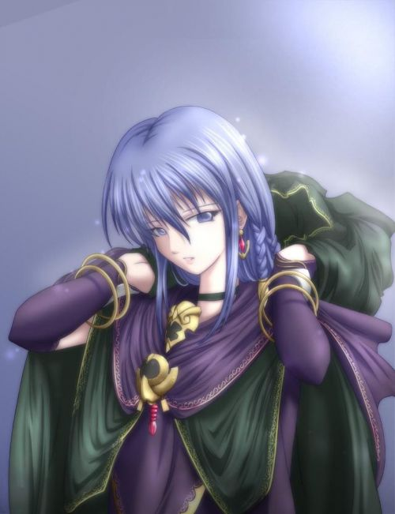

Кастер (яп. キャスター)

Cуга убившая своего матера сразу после призыва, так как сама она является сильным магом и подпитка маной ей не нужна. Сразу после этого, она укрылась в храме Рюудоджи и объединилась с Кудзуки Сойчиру (учителем школы Фуюки, в которой учится Широ), став его слугой. Она планировала призвать Грааль искусственным путем, используя в качестве исходника тело сильного мага и всех жителей города. Влюблена в Кудзуки. Настоящее имя Кастер — Медея. Небесный Фантазм — нож Рул Брейкер — «Крушитель Правил». Случайным образом разрушает связь слуги с мастером, запрещает применение любых способностей, либо поглощает всю ману, передавая её Кастер.
Назад к Сакуре
Назад в меню Героев